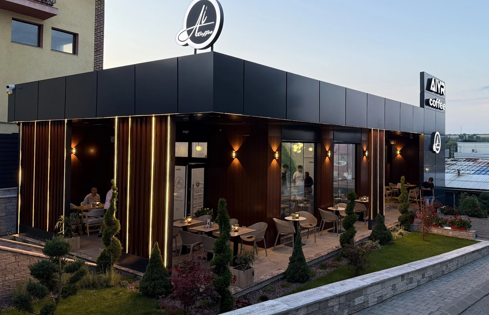

Site demonstrativ
Cafenea în Dorohoi · Strada Războieni 1
01Interiorul cafenelei
02Cafea și croissant
Galerie
Meniu demonstrativ · Produsele și prețurile sunt exemple pentru prezentare.
O doză de espresso.
Două doze de espresso.
Espresso lungit cu apă fierbinte.
Espresso și lapte cu spumă fină.
Espresso dublu și lapte.
Espresso cu lapte și puțină spumă.
Espresso, lapte și gheață.
Espresso cu apă tonică și gheață.
Lămâie, mentă și gheață.
Lămâie și piure de zmeură.
Infuzie de mentă.
Infuzie de fructe de pădure.
Cacao și lapte.
Croissant simplu cu unt.
Croissant umplut cu cremă de vanilie.
Prăjitură densă cu ciocolată.
Nimic pe filtrul ăsta. Încearcă altul.